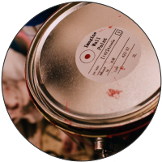
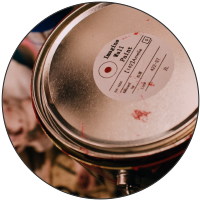
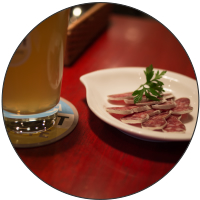
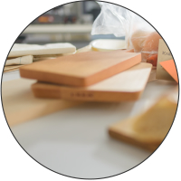

店舗リニューアル
店舗をリニューアルいたしました。店内の仕上げはスタッフ総出でおこないました。手作り感溢れる空間で料理をお楽しみください。
ビールが飲めない女性の方にも人気のあるさくらんぼビールや白ビールなどのベルギービールやウイスキー、カクテル、ワインなど、その他のお酒も豊富に取り揃えております。軽くスタンディングで、仲間内でテーブルを囲んだり、天気のいい日はテラスで夜風に当たりながらなど、シチュエーションで使い分けて、異なる雰囲気をお楽しみください。
東京都渋谷区道玄坂1-10-8 渋谷道玄坂東急ビル8F
+81-3-5459-6206

店舗をリニューアルいたしました。店内の仕上げはスタッフ総出でおこないました。手作り感溢れる空間で料理をお楽しみください。

新入荷の白ビールは、ベルギーのブリュッセルで生まれ、素晴らしいバランスは他に類を見ない味わいです。ファンならずとも是非この機会に味わってください。

やる気のある方お待ちしています。店舗に採用担当がおりますので、直接お電話ください。メールでお問い合わせいただいても構いません。